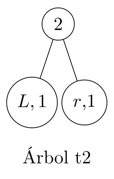
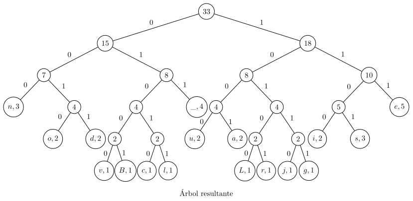

Práctica 1: Codificación de Huffman
Table of Contents
Objetivos
Poner a prueba los conocimientos de lxs alumnxs en el lenguaje de programación Haskell desarrollando la codificación de Huffman.
Instrucciones
Para ésta práctica necesitan tener instalado GHC y Cabal.
Hay dos formas de hacerlo
ghcup (recomendada):
Es una herramienta para administrar las distintas versiones de GHC, Cabal, Stack y otras herramientas del lenguaje de programación Haskell.
La página oficial con las instrucciones es la siguiente:
https://www.haskell.org/ghcup/install/#installation
En la página encontraran la línea de comando adecuada para instalar la herramienta según su sistema operativo.
Antes de seguir la instalación asegúrense de tener instalados los programas requeridos.
Cuando ejecuten el comando de instalación les saldrá un prompt que les preguntará si desean continuar con la instalación; para continuar deberán presionar
Enter.Después les hará una serie de preguntas sobre la instalación: Si quieren que ghcup y los demás binarios se agreguen a las variables de entorno, si desean instalar un servidor de lenguaje, entre otras. Cada una de estas preguntas selecciona una opción por defecto si no escogen ninguna al presionar
Enter, estas opciones serán suficientes para sus prácticas.Al terminar la instalación deberán reiniciar su
shell(o su terminal) y podrán corroborar la instalación de ghcup con el comando.ghcup tui
Les saldrá un menú interactivo en su terminal en donde podrán administrar las versiones de los programas.
Procuren usar las versiones recomendadas tanto de Haskell como de Cabal.
Linux:
Depende de su distribución, pero busquen cómo instalar los programas, por lo general tienen el nombre de ghc y cabal-install en la mayoría de administradores de paquetes.
Adicionalmente, necesitan la biblioteca QuickCheck.
Una vez teniendo GHC y Cabal, la biblioteca puede instalarse con la siguiente línea de comandos:
cabal update
Seguido de:
cabal install --lib QuickCheck
Pueden corroborar la instalación de la biblioteca abriendo el intérprete e importando
Test.QuickCheck.$ ghci Loaded package environment from /home/pppkizbroutle/.ghc/x86_64-linux-9.4.8/environments/default GHCi, version 9.4.8: https://www.haskell.org/ghc/ :? for help ghci> import Test.QuickCheck ghci>
Si no les arroja errores, entonces la instalación fue exitosa.
- Deberán resolver todos las funciones no definidas (las que tienen
undefineden lugar de una definición) en el archivosrc/Huffman.hs. Verifiquen todas sus respuestas.
Pueden hacerlo de dos formas:
runhaskell:
Dentro de la carpeta
src$ runhaskell --ghc-arg='-package transformers' Test.hs === prop_insert_elements from Test.hs:118 === +++ OK, passed 1000 tests. === prop_insert_length from Test.hs:124 === +++ OK, passed 1000 tests. ... === prop_full from Test.hs:242 === +++ OK, passed 1000 tests; 153 discarded. ¡Pasaron todas las pruebas!Ésto compilará los archivos y verificará todas las propiedades de las funciones.
ghci
Dentro de la carpeta
src$ ghci -package transformers Test.hs Loaded package environment from /home/pppkizbroutle/.ghc/x86_64-linux-9.4.8/environments/default GHCi, version 9.4.8: https://www.haskell.org/ghc/ :? for help [1 of 3] Compiling Huffman ( Huffman.hs, interpreted ) [2 of 3] Compiling Examples ( Examples.hs, interpreted ) [3 of 3] Compiling Test ( Test.hs, interpreted ) Ok, three modules loaded. ghci>
Pueden verificar las propiedades de manera individual de la siguiente forma:
ghci> quickCheck prop_<nombre_de_la_propiedad> +++ OK, passed 100 tests; 23 discarded.
Pueden verificar todas las propiedades de la siguiente forma:
ghci> main === prop_insert_elements from Test.hs:118 === +++ OK, passed 1000 tests. === prop_insert_length from Test.hs:124 === +++ OK, passed 1000 tests. ... === prop_full from Test.hs:242 === +++ OK, passed 1000 tests; 153 discarded. ¡Pasaron todas las pruebas!
- Contesten el cuestionario que viene en el archivo
README.md
Desarrollo
La codificación de Huffman es un algoritmo usado para la compresión de datos, éste utiliza un método específico para elegir la representación de cada símbolo, la cual da lugar a un código prefijo (es decir, la cadena de bits que representa a un símbolo en particular nunca es prefijo de la cadena de bits de un símbolo distinto).
Ésta codificación es particularmente conocida porque ninguna representación alternativa de un conjunto de símbolos de entrada produce una salida media más pequeña cuando las frecuencias de los símbolos coinciden con las usadas para crear el código.
El método consiste en contar el número de apariciones de cada letra en un texto y ordenarlos por ejemplo:
Bienvenidos al curso de Lenguajes
Las frecuencias de cada caracter son las siguientes:
| j | 1 |
| g | 1 |
| L | 1 |
| r | 1 |
| c | 1 |
| l | 1 |
| v | 1 |
| B | 1 |
| u | 2 |
| a | 2 |
| o | 2 |
| d | 2 |
| i | 2 |
| s | 3 |
| n | 3 |
| 4 | |
| e | 5 |
Tomamos los primeros dos elementos y construimos un arbol, asignándole al árbol un peso igual a la suma de las frecuencias de sus elementos.
Con éste árbol actualizamos nuestra lista de frecuencias
| L | 1 |
| r | 1 |
| c | 1 |
| l | 1 |
| v | 1 |
| B | 1 |
| t1 | 2 |
| u | 2 |
| a | 2 |
| o | 2 |
| d | 2 |
| i | 2 |
| s | 3 |
| n | 3 |
| 4 | |
| e | 5 |
Volvemos a tomar los primeros dos elementos y construimos el árbol

Quedando nuestra tabla como sigue:
| c | 1 |
| l | 1 |
| v | 1 |
| B | 1 |
| t2 | 2 |
| t1 | 2 |
| u | 2 |
| a | 2 |
| o | 2 |
| d | 2 |
| i | 2 |
| s | 3 |
| n | 3 |
| 4 | |
| e | 5 |
Y repetimos el procedimiento hasta sólo tener un árbol
| v | 1 |
| B | 1 |
| t3 | 2 |
| t2 | 2 |
| t1 | 2 |
| u | 2 |
| a | 2 |
| o | 2 |
| d | 2 |
| i | 2 |
| s | 3 |
| n | 3 |
| 4 | |
| e | 5 |
| t4 | 2 |
| t3 | 2 |
| t2 | 2 |
| t1 | 2 |
| u | 2 |
| a | 2 |
| o | 2 |
| d | 2 |
| i | 2 |
| s | 3 |
| n | 3 |
| 4 | |
| e | 5 |
| t2 | 2 |
| t1 | 2 |
| u | 2 |
| a | 2 |
| o | 2 |
| d | 2 |
| i | 2 |
| s | 3 |
| n | 3 |
| t5 | 4 |
| 4 | |
| e | 5 |

| u | 2 |
| a | 2 |
| o | 2 |
| d | 2 |
| i | 2 |
| s | 3 |
| n | 3 |
| t6 | 4 |
| t5 | 4 |
| 4 | |
| e | 5 |
| o | 2 |
| d | 2 |
| i | 2 |
| s | 3 |
| n | 3 |
| t7 | 4 |
| t6 | 4 |
| t5 | 4 |
| 4 | |
| e | 5 |

| i | 2 |
| s | 3 |
| n | 3 |
| t8 | 4 |
| t7 | 4 |
| t6 | 4 |
| t5 | 4 |
| 4 | |
| e | 5 |
| n | 3 |
| t8 | 4 |
| t7 | 4 |
| t6 | 4 |
| t5 | 4 |
| 4 | |
| t9 | 5 |
| e | 5 |
| t7 | 4 |
| t6 | 4 |
| t5 | 4 |
| 4 | |
| t9 | 5 |
| e | 5 |
| t10 | 7 |
| t5 | 4 |
| 4 | |
| t9 | 5 |
| e | 5 |
| t10 | 7 |
| t11 | 8 |
| t9 | 5 |
| e | 5 |
| t10 | 7 |
| t12 | 8 |
| t11 | 8 |
| t10 | 7 |
| t12 | 8 |
| t11 | 8 |
| t13 | 10 |
| t11 | 8 |
| t13 | 10 |
| t14 | 15 |
| t14 | 15 |
| t15 | 18 |
De esta forma hemos creado el árbol para codificar cada caracter; para codificar cada caracter, si es un subárbol izquierdo, le añadiremos el prefijo \(0\), si es un subárbol derecho, le añadimos el prefijo \(1\), y repetimos éste proceso hasta llegar a la raiz.
Es decir, el árbol con la codificación correspondiente sería la siguiente:

Por ejemplo, si quisiéramos escribir el caracter "e", éste tendría la codificación "111"; si quisiéramos escribir el caracter "B", éste tendría la codificación "01001".
Ejercicios
En su práctica encontrarán la definición del siguiente tipo de dato:
data HuffmanTree = Node { weight :: Int
, left :: HuffmanTree
, right :: HuffmanTree}
| Leaf { element :: Char
, weight :: Int }
deriving Eq
Con éste representaremos los árboles de Huffman. Éste tipo de dato está escrito con la sintaxis de record con dos constructores distintos:
Leaf: Representa las hojas de un árbol; cuenta con un elemento (element), el cual corresponde a un caracter, y un peso (weight), que corresponde la frecuencia de ese caracter.Node: Representa los nodos internos de un árbol; cuenta con dos subárboles, uno izquierdo y uno derecho (leftyrightrespectivamente), y cuenta con un peso (weight) el cual siempre debe ser la suma de los pesos de sus subárboles.
Instancia
Showdel tipo de dato HuffmanTree:Deberán definir la instancia
Showpor medio de la misma funciónshow.instance Show HuffmanTree where show :: HuffmanTree -> String
La forma en la que vamos a representar árboles en cadenas es usando la siguiente gramática:
\(T\to1TT\)
\(T\to 0
\) Siendo \(
\) un caracter cualquiera. Para esta representación en cadena ignoraremos los pesos tanto de los nodos como de las hojas.
Para la regla \(T\to 1TT\) la primera \(T\) corresponde al subárbol izquierdo, mientras que la segunda corresponde al subárbol derecho.
Esta función no cuenta con pruebas individuales, sin embargo es importante que se implemente ya que la última propiedad
prop_fullrevisará todo el procedimiento de la condificación de Huffman intentando decodificar el árbol usando la representación en cadena implementada en esta función. Por esta razón quizá prefieran hacer éste ejercicio después de implementar las funciones del ejercicio 9.Ejemplo:
ghci> show (Node {weight=1, left=Node {weight=1, left=Leaf {element='a',weight=1},right=Leaf {element='b',weight=1}},right=Leaf {element='c',weight=1}}) "110a0b0c"Inserción ordenada:
Implementen la siguiente función, que dado una elemento, una lista y una función de comparación, inserte el elemento en la lista de forma "ordenada" usando la función de comparación recibida:
myInsertBy :: a -> [a] -> (a -> a -> Bool) -> [a]
Ésta función debe cumplir cuatro propiedades:
prop_insert_elements: Verifica si después de la inserción se encuentran tanto el elemento insertado como los elementos de la lista.prop_insert_length: Verifica si el resultado tras insertar un elemento a una lista tiene el mismo número de elementos más uno.prop_insert_ok1: Verifica que después de insertar un elemento en una lista ordenada (de menor a mayor) la lista sigue estando ordenada (de menor a mayor).prop_insert_ok2: Verifica que después de insertar un elemento en una lista ordenada (de mayor a menor) la lista sigue estando ordenada (de mayor a menor).Ejemplo:
ghci> myInsertBy 4 [2,3,5,7] (<) [2,3,4,5,7]
Ordenamiento con función de comparación:
Implementen la siguiente función, que dada una lista y una función de comparación, regrese la lista ordenada con respecto a la función de comparación recibida.
mySortBy :: [a] -> (a -> a -> Bool) -> [a]
Importante: Utilicen la función
myInsertBypara hacer el ordenamiento.Ésta función debe cumplir cuatro propiedades:
prop_sort_elements: Verifica que la lista original y la lista ordenada contengan los mismos elementos.prop_sort_length: verifica que la lista original y la lista ordenada contenga el mismo número de elementos.prop_sort_ok1: Verifica que la lista se ordena correctamente al pasarle como parámetro el operador<.prop_sort_ok2: Verifica que la lista se ordena correctamente al pasarle como parámetro el operador>.Ejemplo:
ghci> mySortBy [5,12,8,4,2,17] (>) [17,12,8,5,4,2]
Contar las frecuencias:
Implementen la función
occur, que recibe una cadena y regresa una lista de hojas cuyos elementos son los caracteres de la cadena original y sus respectivos pesos la frecuencia del caracter en cuestión.occur :: String -> [HuffmanTree]
Importante: Para que no tengan problemas con las pruebas de los siguientes ejercicios es importante que en la lista resultante los caracteres en las hojas aparezcan en el mismo orden en el que aparecieron en la cadena original, y que no se repitan caracteres en la lista.
Esta función debe cumplir cuatro propiedades:
prop_occur_null: Verifica que al pasarle la lista vacía ésta función regrese también la lista vacía.prop_occur_not_nodes: Verifica que todos los elementos del resultado no sean nodos.prop_occur_order: Verifica que en el resultado se encuentren todos los caracteres de la cadena original, aparezcan en el mismo orden, y que no se repitan caracteres.prop_occur_ok: Verifica que el conteo se haya realizado correctamente.Ejemplo:
ghci> map (\Leaf{element=e,weight=n} -> (e,n)) (occur "El hereje rebelde") [('E',1),('l',2),(' ',2),('h',1),('e',6),('r',2),('j',1),('b',1),('d',1)]
Ordenamiento inicial
Similar a
occur, con la diferencia de que regresa la lista ordenada de menor a mayor con respecto al peso de las hojas.initHuffman :: String -> [HuffmanTree]
Importante: Utilicen las funciones
occurymySortBy.Esta función debe cumplir una propiedad:
prop_initHuffman_sorted: Verifica que los elementos en el resultado estén ordenados de menor a mayor por su peso.Ejemplo:
ghci> map (\Leaf{element=e,weight=n} -> (e,n)) $ initHuffman "El hereje rebelde" [('d',1),('b',1),('j',1),('h',1),('E',1),('r',2),(' ',2),('l',2),('e',6)](El orden de los caracteres con pesos iguales puede variar)
Generación del árbol:
Implementa una función que construyye el árbol para la codificación de Huffman dada una lista de árboles; toma los dos primeros elementos y crea un nuevo nodo en donde sus hijos son los elementos tomados y el peso es la suma de ambos, éste nuevo nodo se inserta de nuevo en la lista de manera ordenada (menor a mayor) a partir de su peso y se realiza recursión hasta tener un sólo elemento, el cual será el árbol en resultante.
processHuffman :: [HuffmanTree] -> Maybe HuffmanTree
Nota: Si la lista recibida es vacía, no se puede construir el árbol, en ese caso regresa
Nothing.Ésta función tiene una única propiedad, y revisa la correcta construcción de un árbol a partir de ejemplos concretos en el archivo
Examples.hs:prop_processHuffman_okPara ésta propiedad es necesario que ya hayan implementado la función
initHuffman.Para cada cadena obtenida del archivo de ejemplos, se admiten hasta cuatro árboles distintos los cuales corresponden a los generados a partir de las dos formas de ordenar los árboles iniciales usando el algoritmo
Insertion Sorty a las dos formas de insertar un elemento de manera ordenada durante el procedimiento. Para asegurar que esta propiedad se cumpla, y su resultado sea alguno de los cuatro árboles revisados en la propiedad, es importante que hayan considerado las notas importantes de las funcionesmySortBy,occureinitHuffman.Crear el "diccionario".
Implementa una función que dado un árbol devuelve un "diccionario" que relacione los caracteres con su respectiva traducción en el árbol.
createDict :: HuffmanTree -> [(Char,String)]
Importante: Si el árbol inicial es una hoja, la traducción del caracter en cuestión debe ser siempre "0".
Para esta función hay igualmente una única propiedad, que utiliza árboles en el archivo de ejemplo.
prop_createDict_ok: Verifica que se construya correctamente el "diccionario" según la topología del árbol.Ejemplo:
ghci> createDict $ Node {weight = 17, left = Node {weight = 5, left = Node {weight = 2, left = Leaf {element = 'j', weight = 1}, right = Leaf {element = 'h', weight = 1}}, right = Node {weight = 3, left = Leaf {element = 'E', weight = 1}, right = Leaf {element = 'r', weight = 2}}}, right = Node {weight = 12, left = Node {weight = 4, left = Leaf {element = ' ', weight = 2}, right = Leaf {element = 'l', weight = 2}}, right = Node {weight = 8, left = Leaf {element = 'e', weight = 6}, right = Node {weight = 2, left = Leaf {element = 'd', weight = 1}, right = Leaf {element = 'b', weight = 1}}}}} [('j',"000"),('h',"001"),('E',"010"),('r',"011"),(' ',"100"),('l',"101"),('e',"110"),('d',"1110"),('b',"1111")](en este caso no importa el orden del diccionario)
Transcripción.
Implementa una función que dada una cadena y un diccionario reescribe los caracteres de la cadena original por los indicados en el diccionario.
rewrite :: String -> [(Char,String)] -> Maybe String
Nota: Si un caracter no está en el diccionario se regresa
Nothing.Hint: Investiga la función
lookup.Ésta función debe cumplir tres propiedades:
prop_rewrite_void: Verifica que si el primer parámetro es la cadena vacía, el resultado nos devuelva también la cadena vacía.prop_rewrite_null: Si la cadena dada no es vacía, verifica que el resultado de reescribir esa cadena con un diccionario vacío nos devuelvaNothing.prop_rewrite_ok: Verifica que se reemplacen los caracteres de la cadena recibida según el archivo de ejemplos.Ejemplo:
ghci> rewrite "El hereje rebelde" [('j',"000"),('h',"001"),('E',"010"),('r',"011"),(' ',"100"),('l',"101"),('e',"110"),('d',"1110"),('b',"1111")] Just "01010110000111001111000011010001111011111101011110110"
Transcripción completa.
Implementa una función que construye el árbol de huffman y nos da su codificación en una tupla donde el primer elemento es el árbol y el segundo la codificación.
huffman :: String -> Maybe (String, String)
Nota: Si la construcción del árbol da
Nothing, regresaNothing. Utiliza la funciónshowpara mostrar el árbol.Posteriormente, usando la función anterior, da una función que regresa la codificación completa; primero se describe el árbol seguido de la codificación binaria del texto original.
fullHuffman :: String -> String
Nota: Si el resultado de la función
huffmanesNothing, ésta regresa la cadena vacía.Estas funciones deben cumplir dos propiedades:
prop_null: Verifica que la cadena vacía también regrese a la cadena vacía.prop_full: Intenta parsear la cadena codificada y revisa si al traducirla nos devuelve la cadena original.
Ejemplo:
ghci> fullHuffman "El hereje rebelde" "1110j0h10E0r110 0l10e10d0b01010110000111001111000011010001111011111101011110110"
(El resultado puede ser distinto)
Consideraciones
- La entrega es por medio de la plataforma Github Classroom.
- Pueden hacer equipos de hasta 3 personas.
- Todas las prácticas con copias totales o parciales tanto en el
código como en el
READMEserán evaluadas con cero. - Las únicas funciones con soluciones iguales admisibles son todas
aquellas que sean iguales a las resueltas por el grupo en el
laboratorio, sin embargo la explicación de su solución en el
READMEdebe ser única para cada equipo. - No entregar el
READMEo tenerlo incompleto se penalizará con hasta dos puntos menos sobre su calificación de la práctica. - Cada día de retraso se penalizará con un punto sobre la calificación de la práctica.
- Pueden usar cualquier función de alguna biblioteca estándar de
Haskell, siempre que:
- No resuelva directamente el ejercicio.
- No requiera instalación manual.
- Indicar en el
READMEsi la ejecución de los Tests cambia (e.g. Si las paqueterías que quieren usar están en Haskell, pero están ocultas, deberán indicar cómo adaptar la línea de comandos para ejecutar los Tests para que tome en cuenta las bibliotecas que van a usar).
- La compilación de las pruebas de esta práctica puede tardar entre
uno y dos minutos, pues el archivo de ejemplos es grande, les
recomendamos ejecutar las pruebas desde
ghciy recargar sus cambios con el comando:rpara que éste archivo no se tenga que compilar cada que hagan cambios en su práctica. - Las pruebas de esta práctica no deben tardar más de un minuto. Al
final del archivo
Huffman.hshay una variablenumero_de_pruebas, ésta indica el número de pruebas que se realizarán a cada propiedad al ejecutar elmaindel archivoTest.hs. Por defecto está configurada para hacer 1000 pruebas, pero pueden ponerle un valor menor si consideran que las pruebas tardan mucho en completarse, siempre y cuando éste valor no sea menos a 100. Si las pruebas tardan más de un minuto aún con 100 pruebas, consideren otra solución. - Pueden hacer tantas funciones auxiliares como quieran, pero no deben modificar la firma de las funciones ni de las variables, ni la definición de tipos de dato que se les dió.
- No se recibirán prácticas que no compilen (no debe arrojar
errores la orden
ghci Test.hs). Si no resuelven alguna de las funciones déjenlas comoundefined, pero no eliminen la función, ya que ésto lanzará errores. - No deben modificar los archivos
Test.hs,Examples.hs, ni los respectivos a su dispersiónsha256. Si encuentran errores o tienen dudas sobre las pruebas, manden un correo al ayudante de laboratorio.